I build the growth engine, fix activation, and stay close to customers.
Growth product manager with 9+ years across B2B and B2C SaaS, covering product, business, and engineering. Most recently running Clarity Inbox end to end as solo founder, after growth and product roles at Optiwatt, ARTERNAL, Obie, 500px, and Venngage. I started in sales. It still shows in how I work: close to the numbers, close to the customer.
// Worked with
ARTERNAL
Optiwatt
Clarity Inbox
Obie
500px
Venngage
Vidyard
SoapBox
// Case 01, CRM
ARTERNAL
Growth Product Manager · Nov 2020 - Aug 2021
Gallery software built around one idea: every collector relationship on a single timeline. CRM, inventory, Smart Mail, viewing rooms, and invoicing and payments sit in the same place, so follow-ups don't slip and interest turns into a sale.
A CRM for art galleries. It captures collector relationships on a single timeline and connects that record to inventory, outreach, viewing rooms, and invoicing, the full path from first conversation to closed, paid sale.
// The problem
I interviewed 30+ high-profile art collectors before building. Most gallery owners, and every collector I spoke with, were dissatisfied with the tools they had. High-ticket sales ran on scattered threads and manual invoicing, and financing was out of reach for younger collectors, so interested buyers stalled at the payment step.
// What I built
ARTERNAL Pay, a buy-now-pay-later invoicing feature inside the CRM, taking Stripe and Affirm alongside credit and debit cards and ACH. A gallery could send the invoice from the same timeline where the relationship lived, and a collector could pay, or finance, a five-figure piece without leaving the flow.
I also ran ARTERNAL's website launch campaign, June 11-30, 2021, with the launch itself on June 17. I built the inbound flow behind it, email nurture and a request-a-demo path, and owned the email copy and brief, plus several published blog articles that gave the launch somewhere to land. Alongside that I worked on the Lunch & Learn playbook: a content and event series for collectors and art professionals, planned 4-8 weeks out, with topics, guest preparation, mock dry runs, and a retro after each session. Launch, inbound funnel, content, and events, all of it feeding the same CRM pipeline the product was built to run.
// What changed
Gallery sales conversion rose 24%, concentrated in high-ticket purchases over $5,000, exactly where payment friction was killing deals. New product sales rose 15% as financing opened the door to younger collectors.
// Collector research, ACE feature matrix
Collectors wanted the collection record kept in one place.
For the collector product (ACE), I scored every proposed feature across 16 interviews, collectors, art advisors, and collection managers, as wanted or not wanted. The pattern was consistent: keep the collection's paperwork, images, and messages in one place, and don't make the collector do the data entry.
What was scored
Wanted
What it meant
Collection record
11-13 of 16
Images, information, receipts, purchase details, invoices, insurance values, condition reports, and shipping for each work, the near-unanimous core of the product.
Provenance
10 of 16
Ownership history attached to the work itself.
Watch list
9 of 16
Artists on the collector's radar, the strongest discovery feature in the set.
PDF digest
7-8 of 16
Gallery PDFs filed, saved, and synced without the collector hunting through email and Dropbox.
Search & contacts
7 of 16
Quick, keyword, and smart search across the collection. Centralized conversations, gallery, supplier, and insurance contacts in one place, scored the same.
Valuation & market data
Split
6-7 wanted it, 5-6 didn't. Manual appraisals scored 8 of 16; automated appraisals only 3. Collectors wanted a value they could trust.
Portfolio analytics
0 of 16
Value-over-time views, predicted appreciation, returns by piece, and trend breakdowns, nobody asked for any of it. That whole direction got cut.
Counts are interviews marking the feature wanted in the ACE matrix (n=16). Ranges cover closely related sub-features scored separately.
“A purchase shouldn't require 30 emails.”
Asked for their “super power,” one collector traced the whole chain, committed, purchased, confirmed, proof of insurance, back and forth, and named the communication layer as the major pain. The ask was one tool that answers: I've bought it, it's in my inventory, I can see it, and insurance has it.
“I only want to do the fun parts.”
Another wanted the gallery to handle an acquisition and installation start to finish, with a clear path that keeps the collector out of the middle of the paperwork.
“Everything in one place — and it should populate itself.”
The same point came back in different words across interviews: works should arrive from the gallery already entered, documents should feed in directly, and nobody should be typing in their own collection by hand.
// The funnel math behind it
I also built ARTERNAL's 2021 waterfall model: a $2.5M net-new revenue goal worked backwards through stage conversion, 35% prospected to replied, 15% to qualification, 20% to SQL, 20% to closed, to a $12.5M minimum pipeline, with the marketing side modelled the same way (5% visitor to lead, 20% lead to MQL, 50% MQL to SAL) and daily build targets at five price points, $1,500 to $100,000 ACV. It's a plan, not a result, it's how the targets got set before anyone picked up the phone.
+24%
Gallery sales conversion after ARTERNAL Pay, strongest on purchases over $5,000
+20%
Gallery transaction volume, with 90% customer retention
+15%
New product sales, by making financing accessible to younger collectors
// The bank diligence behind the payments
ARTERNAL Pay's buy-now-pay-later needed a banking partner behind it. I worked the engagement tracker for that onboarding with Cross River Bank: 56 due-diligence deliverables across general, compliance, AML, information-security, and certification workstreams, target-dated from May 27, 2021 and submitted to the bank through June and July 2021, flow of funds, AML/BSA policy, KYC procedures, security policies, ISO 27001 and SOC. My name is on the tracker's own next steps, from beneficial ownership to flagging a gap in the AML policy. The full breakdown is in the case.
// What it proves
ARTERNAL is the same shape as any sales-led CRM: a single customer timeline, follow-ups that don't slip, and payments that close the loop. The lesson I took from it is that the CRM earns its keep at two moments: when a rep would otherwise forget to follow up, and when a ready buyer would otherwise stall on payment.
// Case 02, Growth & Activation
Optiwatt
Growth Product Manager · Nov 2023 - Feb 2025
EV charging and home energy software that saves drivers money and steadies the grid. My work: new business lines, onboarding and device connection, and utility programs, the activation layer the whole business ran on.
An energy product is worth nothing until a device is connected. Users stall at the first value step: find that step, instrument it, and fix it before buying more traffic.
// What I built
Growth Product Manager, working across design, engineering, and sales, with executive buy-in secured for new launches aimed at Series B. I led 25 product features, including the Tesla API migration and EVSE integrations, and launched two new business lines, thermostats and EVSE products, into two new user segments.
// What changed
Sign-up to address completion rose 125.57% through targeted onboarding changes, device connection rates rose 13.45%, and the HVAC connection flow reached 36.26% conversion with 80.64% completion. Tesla API stability held across 50,000+ connected devices.
Consumer utility programs grew from 16 to 36, including five new enterprise deals and 20,000+ device enrollments. Total device recruitment grew from 50,000 to 70,000 by February 2024, against a $10 CAC benchmark for utility clients. One enterprise client, CEC, reached full program enrollment in 6 months against a 12-month target.
$855K → $7.9M
Total contract value, up 4x annually, laying the foundation for $7.5M ARR by Aug 2025
16 → 36
Utility programs, including five new enterprise deals
+125.57%
Sign-up to address completion through onboarding work
// What it proves
Consumer and enterprise growth at the same time, and the discipline underneath both: fix the connection step, measure CAC against contract value, and ship the features enterprise deals actually depend on.
// Case 03, Founder · Retention & Activation
Clarity Inbox
Solo founder · 2023 - Present
Clarity is an AI-native, full-stack email service built for businesses that run on their inbox. That means mail that sorts itself, replies written in your words, and nothing you sent or promised getting forgotten.
Early retention is strong. The problem sits later, and in a different place than I expected: paid retention falls off a cliff after day 30, and activation is the bottleneck. Most users connect their inbox, then never take the step that makes the product stick. The strongest activation signal by far is a user adding their own memory to the system.
// What I built
Solo founder and sole engineer on the original build: a CASA Tier 2 certified AI SaaS product that watches supplier and customer email, auto-tracks every purchase order, flags stalled, unpaid, and missing items, and keeps a running memory of quality issues per product so defects don't repeat. It grew to 75+ users, with a distribution partnership that included a 77,000-subscriber newsletter deal and no outbound budget. The customers are specific: owners and ops leads at import and trading firms of 2-15 people, ordering custom products from overseas factories, with repeat orders tracked by hand.
// What changed
This is the work: reading cohorts instead of totals, naming the exact step where users stall, and pointing the roadmap at it.
Average retention across weekly cohorts. Early churn washes out non-fit users, then a core sticks, about half of free cohorts and just under half of paid cohorts are still retained at week 26.
Free cohortsPaid cohorts
Averages across cohorts. Later weeks reflect only the oldest cohorts, and many cohorts are 1-3 users, so individual rows swing widely. The shape is a fall, then a flat, sticky core.
Retention
Day 1
Day 30
Day 60
Day 180
Free
86.4%
75.5%
68.0%
48.4%
Paid
96.0%
79.2%
54.2%
42.1%
Milestone retention from the same sheet. Paid holds through day 30, then cliffs to 54.2% by day 60, that gap is the roadmap item.
38.1%
Activation rate, 32 of 84 eligible onboarded users ever triggered an activation signal
52
Ghost users: connected their inbox, zero engagement signals. Users stall on the step after connecting
26 of 32
Activated users added their own memory, the strongest signal, ahead of first rules (7) and high-quality drafts (3)
// What it proves
Running a SaaS business end to end (product, pricing, positioning, support) and diagnosing activation and retention from cohorts. The job is getting more users past the early washout and into the flat part of the curve, here and in any CRM business.
// Case 04, Product-Led Growth
Obie
Head of Growth, Data Science & Product Growth · Dec 2016 - Aug 2018
A knowledge product that started by making Google Drive searchable inside Slack, so what a company already knew became findable where people already worked. I was the growth hire, the frameworks I set up were still the ones the team ran on.
The full 500 Startups Demo Day pitch deck, all nine slides, including the growth chart and the closing team photo, is embedded in the full case.
// The problem
What a company knows is scattered across a dozen tools, and none of it is findable where people work.
// What I built
Led the unbundling of a traditional LMS into a bottom-up, product-led motion. I built the product growth frameworks the team kept using, and ran experiments on a shoestring budget, everything had to earn its keep.
// What changed
Adoption spread team by team: from single digits to 200,000+ users, with 1,600 teams using Obie by May 27, 2017, growing 30% month over month at that point. The work contributed to multiple G2 awards, including Momentum Leader and Category Leader.
200,000+
Users, grown from single digits in 8 months through bottom-up adoption
1,600
Teams using Obie by May 27, 2017
30%
Month-over-month growth at that point in 2017
// What it proves
Product-led growth from first principles: frameworks that outlast the person who built them, and experimentation that works without a budget.
// Earlier work, case studies & side projects
The CRM thread was there early.
Before the cases above, I was building the same kind of thing on a smaller scale, on my own time: two build case studies and a run of side projects. CRM was always the interest underneath them: one record for a relationship, and a way to see the whole journey in one place. That thread runs from the Mini CRM below through Obie, ARTERNAL's gallery CRM, and Clarity, to the DM CRM work I'm doing now.
// Side project, featured
Mini CRM + Landing Page Tracking Tool
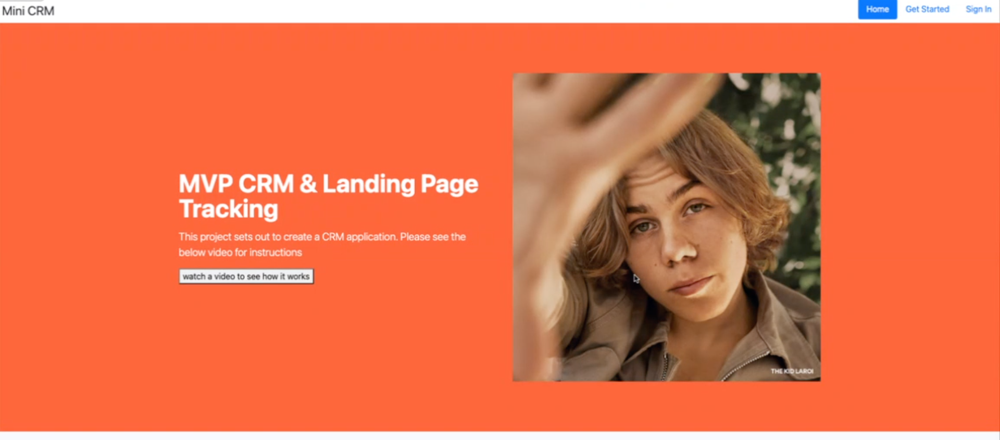
The Mini CRM landing page.
“Micro CRM with marketing identity managing feature. Identity management system offers the ability to link visitor’s movements across different platforms, giving a holistic view of the user journey.”
That's how I described it when I shipped it, and it's still the clearest early statement of the work I keep coming back to. This was a side project: a small CRM that joined up who a visitor was across pages and platforms, giving the journey a single record. Obie did it for what a team knew, ARTERNAL did it for collector relationships on a single timeline, and Clarity does it for orders in an inbox. The Mini CRM is where that instinct shows up first, in code.
Finally, a real doctor friend to complement your healthcare.
A health management tool connecting patients to doctors, built with Ruby on Rails and Tailwind CSS, hosted on Heroku. The build shipped a 50% increase in patient engagement and satisfaction from this work, the same figure behind the fractional healthcare line in my track record below.
Product Hunt: 5/5 from 7 reviews, 249 upvotes, top 10 product of the day.
Admin panel built with Administrate, the Rails admin engine.
Step 1. A profile that helps doctors build context.
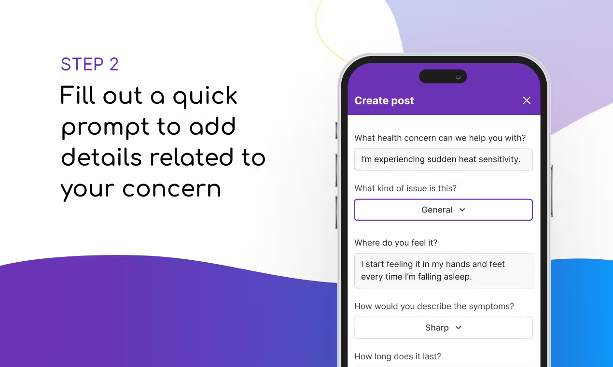
Step 2. A quick prompt to add the concern's details.
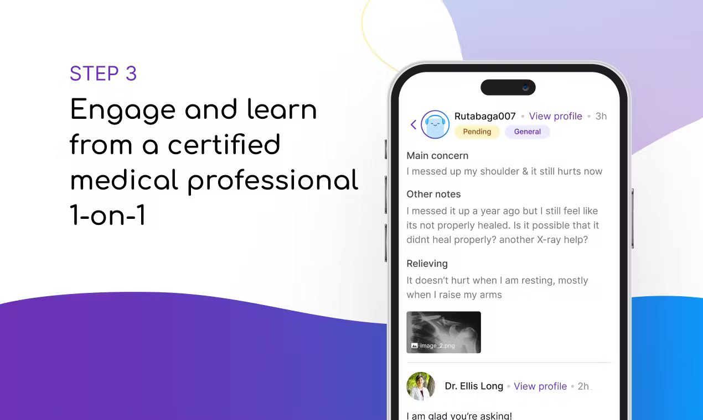
Step 3. Engage 1-on-1 with a certified medical professional.
// Side projects
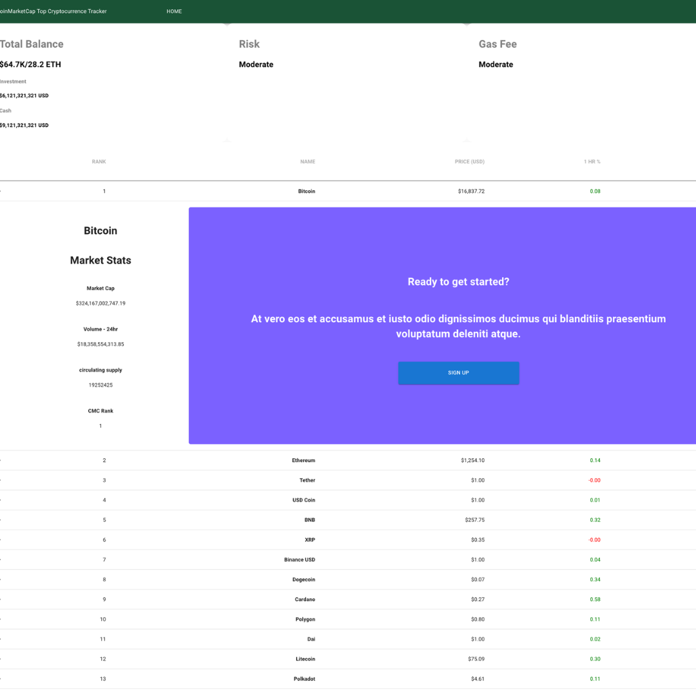
CoinMarketCap Cryptocurrency Tracker
A simple and handy tool for cryptocurrency investors to track the price, market cap, and predict possible future price of the top 10 cryptocurrencies. View project ↗
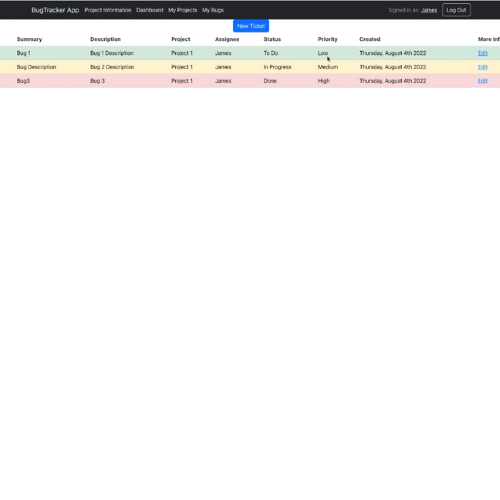
Bug Tracker Project
A project management tool intended for use as an internal tool within an organization, built mainly to help developers and dev managers. View project ↗
Realtime Web-based Chat App
Simple web-based chat application with jQuery, vanilla JS, and a Ruby on Rails backend. View project ↗
Reddit Clone
Reddit Clone MVP, built to practice ORMs and ActiveRecord, migrations, CRUD, and associations. View project ↗
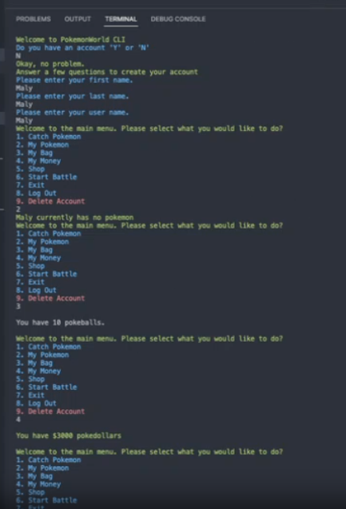
Pokemon CLI Adventure
A clean and simple CLI application gem built with plain Ruby, catch, list, and display Pokémon, working with a public API through a GET fetch to PokeAPI's RESTful API. View project ↗
// Supporting track record
The rest of the record.
500pxGrowth Marketer · 2019 - 2020
Led 40+ SEO experiments and A/B tests with product, engineering, and data science. Non-branded traffic up 525% through technical and programmatic content work on profile and photo pages.
VenngageGrowth Marketer · 2018 - 2019
SEO and user-journey work that lifted registrations 9.06%, premium upgrades 72%, and business upgrades 6.35% above baseline.
FractionalGrowth PM & Engineer · 2018 - Present
Dual growth-PM and software-engineering engagements for clients, acquisition and retention through SEO and viral loops, including a 50% increase in patient engagement for a healthcare startup.
// Where it started, sales
VidyardYC S11 · 2013 - 2015
Built the BDR playbook and mentored new hires. Rank 1 of 8, 101% of quota.
SoapBoxBusiness Development · 2015 - 2016
175% of quota in the first month, rank 2 of 7 SDRs, consistently over target.
The Writing ProjectMarketing & BD · 2016
Led go-to-market for the edtech platform: traffic up 36.5% monthly, weekly users from 250 to 900, bounce rate from 82% to 63.5%.
// Background
Flatiron School, Software Engineering. 500 Startups, Spring Batch 20 (Obie). Reforge Growth Series, growth models, retention and cohort analysis, activation. Juno College, Web Development. Wilfrid Laurier University, BA, Psychology & Political Science, with programming and data coursework. Core toolkit: product-led growth, A/B testing, cohort analysis, programmatic SEO, and building in React, JavaScript, Ruby, and Python.
// Get in touch
Ready to talk?
I can show the numbers behind every claim on this page. Based in White Rock, BC.
A CRM for art galleries where every collector relationship lives on a single timeline, and where the sale closes in the same place the relationship is managed.
CRM · Galleries · Payments
ARTERNAL
One timeline for the collector relationship, and a way to get paid on it.
Art galleries selling high-ticket work to serious collectors
Focus
Payments conversion, Cross River Bank diligence, launch & funnel, collector research
// 01 The problem
Interest was there. The close wasn't.
Gallery sales ran on scattered email threads and manual invoicing. Follow-ups slipped because no single record held the relationship, and financing was out of reach for younger collectors, so a buyer who wanted a five-figure piece stalled at the payment step, and the deal cooled.
That is the same failure mode as any conversation-led business: the follow-up that doesn't happen, and the ready buyer who can't easily pay.
// 02 What I built
Invoicing and payments, inside the timeline.
I built ARTERNAL Pay, a buy-now-pay-later invoicing feature inside the CRM, taking Stripe and Affirm alongside credit and debit cards and ACH. A gallery sends the invoice from the same timeline where the relationship lives; the collector pays, or finances, a five-figure piece without leaving the flow.
// 03 What changed
Conversion, volume, and new sales all rose.
+24% gallery sales conversion after ARTERNAL Pay, strongest on purchases over $5,000.
+20% gallery transaction volume, with 90% customer retention.
+15% new product sales, as financing opened the door to younger collectors.
// 04 The growth engine
Launch, funnel, and events feeding one pipeline.
I ran ARTERNAL's website launch campaign, June 11-30, 2021, with the launch itself on June 17. Behind it I built the inbound flow, email nurture and a request-a-demo path, and owned the email copy and brief, plus several published blog articles that gave the launch somewhere to land.
Alongside it, the Lunch & Learn playbook: a content and event series for collectors and art professionals, planned 4-8 weeks out, with topics, guest preparation, mock dry runs, early check-ins, and a retro after each session, all of it feeding the same CRM pipeline the product was built to run.
I also built the 2021 waterfall model behind the targets: a $2.5M net-new revenue goal worked backwards through stage conversion, 35% prospected to replied, 15% to qualification, 20% to SQL, 20% to closed, to a $12.5M minimum pipeline, with marketing modelled the same way (5% visitor to lead, 20% lead to MQL, 50% MQL to SAL) across five price points, $1,500 to $100,000 ACV. It is a planning model, not a result, it is how the targets got set before anyone picked up the phone.
// 05 Collector research
Collectors, advisors, and collection managers.
These weren't casual buyers. The research panel behind the collector product (ACE), 16 scored interviews with collectors, art advisors, and collection managers, included, in public sources, top-200 collectors and Sotheby's- and Christie's-level advisors: people managing serious collections, with insurance values, provenance, condition, and shipping to track. I don't publish interviewee names. The tier of buyer is what the product had to satisfy.
The core pain was the purchase back-and-forth, roughly 30 emails from committing to buy, through purchase and confirmation, to proving insurance. What collectors wanted was one place where a purchase lands in inventory, is visible, and can be sent to insurance without that chase.
What was scored
Wanted
Read
Collection record
11-13 of 16
Images, receipts, invoices, insurance, condition, shipping, the near-unanimous core.
Provenance
10 of 16
Ownership history attached to the work itself.
Watch list
9 of 16
The strongest discovery feature in the set.
Portfolio analytics
0 of 16
Nobody asked for it. That whole direction got cut.
The lesson that still shapes my work: high-end users wanted the record kept for them. Across 30+ collector interviews, the product direction came from what buyers scored as wanted.
// 06 Cross River Bank, the diligence behind the payments
A payment feature doesn't ship until the bank says yes.
Payments inside a CRM, buy-now-pay-later through Affirm included, run on a banking partner, and the partner has to diligence the company before a dollar moves. For ARTERNAL Pay, that partner track was Cross River Bank, and I worked the engagement tracker behind the onboarding: 56 numbered deliverables, target-dated from May 27, 2021, with submissions going to the bank from mid-June through the end of July 2021.
Workstream
Items
What the bank asked for
General due diligence
1-15
Authorized signers and ID, the product flow and flow of funds, an attorney comfort letter that the flows weren't unlicensed money transmission, incorporation records, org structure, and bank statements.
Compliance
17-24
Compliance technology vendors, litigation confirmation, complaints handling and customer support procedures, dispute resolution, records management, terms and privacy policies.
AML
25-36
Beneficial ownership, the AML/BSA/OFAC policy, KYC procedures for regular, high-risk, and PEP customers, SAR reporting, OFAC screening, and transaction monitoring.
Information security
37-53
IT and data security policies, business continuity and disaster recovery, incident response, data retention and destruction, vendor management, and the IT risk assessment.
Certification
54-56
ISO 27001, SOC documentation, and the FFIEC cyber assessment, the last of these sent to the bank on July 29, 2021.
The same tracker phased the work in a second view, pre-launch, within three months of launch, and within the first year, so the partnership could start without every certification closing on day one.
My name is on the tracker itself. The next steps assigned to me included gathering ID for key management, getting insurance coverage in place for the US entity being onboarded, sending the beneficial-ownership form to leadership for signature, lining up SOC vendors for leadership approval, and reviewing the AML policy, where I flagged that the KYC procedures for high-risk and PEP customers weren't actually in it.
It reads as a working snapshot, because it is one: the first diligence items were accepted by the bank in June 2021, the information-security pack went over on July 20, and the certification items were still being scoped. That is what regulated payments look like from inside: a long checklist where product, legal, compliance, and security all have to close before the feature can.
+24%
Gallery sales conversion after ARTERNAL Pay, strongest over $5,000
High-profile collector interviews behind the product direction
// What it proves
ARTERNAL is the closest parallel on this page to a conversation-to-sale CRM: one customer timeline, follow-ups that don't slip, and payments that close the loop. I have run that shape of product (research, launch, funnel, conversion) end to end.
EV charging and home energy software. My work was the layer the business ran on: getting users connected, and turning that connection into enterprise programs.
ϟEV Charging · Home Energy · Utilities
Optiwatt
Onboarding, device connection, and utility programs across 16 product areas.
Role
Growth Product Manager, design, engineering, and sales
Scope
25 features, including the Tesla API migration and EVSE integrations
New lines
Thermostats and EVSE products, into two new user segments
Focus
Activation, enterprise growth, reliability at scale
// 01 The problem
Fix the connection step first.
An energy product is worth nothing until a device is connected. That step was my focus.
The pattern is the one I look for in any product: users stall at the first value step. Find that step, instrument it, and fix it before buying more traffic.
// 02 What I built
The features and integrations the programs run on.
I led 25 product features, including the Tesla API migration and EVSE integrations, and launched two new business lines, thermostats and EVSE products, into two new user segments.
I led the Tesla API migration and EVSE integrations across the feature set, and Tesla API stability held across 50,000+ connected devices. Enterprise renewals depend on whether the integration their program runs on stays up.
// 03 What changed
Consumer activation, enterprise revenue.
+125.57% sign-up to address completion through targeted onboarding changes.
+13.45% device connection rates.
36.26% conversion and 80.64% completion on the HVAC connection flow.
Consumer utility programs grew from 16 to 36, including five new enterprise deals and 20,000+ device enrollments. Total device recruitment grew from 50,000 to 70,000 by February 2024, against a $10 CAC benchmark for utility clients. One enterprise client, CEC, reached full program enrollment in 6 months against a 12-month target.
Total contract value grew from $855,000 to $7.9M, up 4x annually, laying the foundation for $7.5M ARR by August 2025.
$855K → $7.9M
Total contract value, up 4x annually
16 → 36
Utility programs, including five new enterprise deals
+125.57%
Sign-up to address completion through onboarding work
// What it proves
Activation measured step by step, unit economics held against contract value, and the reliability work underneath enterprise growth, the same discipline a CRM business needs between signup, first booked outcome, and renewal.
// Case 03, Founder · Retention & Activation · Full case
Clarity Inbox
Solo founder · 2023 - Present
Clarity is an AI-native, full-stack email service built for businesses that run on their inbox. That means mail that sorts itself, replies written in your words, and nothing you sent or promised getting forgotten. This case is the diagnosis, including the unflattering half.
AI Order Desk · Import / Trading
Clarity
Mail that sorts itself, replies written in your words, and nothing you sent or promised getting forgotten.
Role
Solo founder; sole engineer on the original build
Product
CASA Tier 2 certified AI SaaS, grown to 75+ users
Customers
Owners and ops leads at import/trading firms of 2-15 people
Distribution
Partnership including a 77,000-subscriber newsletter deal, no outbound budget
// 01 The problem
The next step is where users stall.
38.1% activation, 32 of 84 eligible onboarded users ever triggered an activation signal.
52 ghost users, connected their inbox, zero engagement signals.
26 of 32 activated users added their own memory to the system, the strongest signal, ahead of first rules (7) and high-quality drafts (3).
Paid holds through day 30, then cliffs to 54.2% by day 60. That gap is the roadmap item.
// 02 What I built
An order desk that reads the inbox a company already runs on.
Clarity watches supplier and customer email, auto-tracks every purchase order, flags stalled, unpaid, and missing items, and keeps a running memory of quality issues per product so defects don't repeat. The customers are specific: firms ordering custom, drawing-based products from overseas factories, with many repeat orders tracked by hand in email and spreadsheets.
// 03 What changed
The curves flatten and hold.
Across weekly cohorts, early churn washes out non-fit users, then a core sticks: 50.8% of free cohorts and 48.7% of paid cohorts still retained at week 26. Milestone retention from the same sheet (Growth Engine, refreshed Oct 26, 2026):
Retention
Day 1
Day 30
Day 60
Day 180
Free
86.4%
75.5%
68.0%
48.4%
Paid
96.0%
79.2%
54.2%
42.1%
That diagnosis points the fix at the first value step, getting a user's own knowledge into the system, ahead of more signups. It is the same shape as any product where users connect, then never reach the first outcome that makes them stay.
// 04 Pricing, tested honestly
Two prices, two different products.
The inbox product runs at $50/month. The import order desk is being tested as a $750/month pilot, the No-Stalled-Order Pilot, priced against the dollar value of open orders at risk. The price is still a test, and I present it that way: the pilot exists to find out whether it holds.
38.1%
Activation rate, 32 of 84 eligible onboarded users
52
Ghost users: connected, zero engagement signals
~49-51%
Cohort retention still holding at week 26, paid and free
// What it proves
Running a SaaS business end to end (product, pricing, positioning, support) and diagnosing activation and retention from cohorts, then saying plainly what isn't working yet.
Head of Growth, Data Science & Product Growth · Dec 2016 - Aug 2018
A knowledge product that made Google Drive searchable inside Slack. I was the growth hire, and the frameworks I set up were still the ones the team ran on.
~Knowledge · Slack · PLG
Obie
Bottom-up adoption: unbundle the LMS, land in Slack, grow team by team.
Role
Head of Growth, data science & product growth
Motion
Bottom-up, product-led, unbundling a traditional LMS
Recognition
Multiple G2 awards, including Momentum Leader and Category Leader
Context
500 Startups, Spring Batch 20
// 01 The problem
What a company knows, scattered across a dozen tools.
What a company knows is scattered across a dozen tools, and none of it is findable where people work. Teams were already asking each other questions in Slack; the knowledge they needed lived elsewhere, and the existing option was a traditional LMS sold top-down.
// 02 What I built
Unbundle the LMS. Land where people already work.
Instead of selling a top-down learning platform, we unbundled it into a bottom-up product that lived in Slack, where teams already asked each other questions.
I built the product growth frameworks the team kept using, and ran experiments on a shoestring budget, everything had to earn its keep. The point of a framework is that growth stays systematic after the growth hire leaves the room.
// 03 What changed
Adoption spread team by team.
Adoption spread team by team: from single digits to 200,000+ users, with 1,600 teams using Obie by May 27, 2017, growing 30% month over month at that point. Users and teams are different numbers, and I keep them distinct.
The work contributed to multiple G2 awards, including Momentum Leader and Category Leader.
// 04 Building Obie.ai for Stride
A messaging bot that turned conversation into institutional knowledge.
In February 2018 I wrote up the build on Medium (“Building Obie.ai for Stride”). The product, in short: a messaging bot that captured the knowledge teams were already trading in conversation and made it searchable as institutional knowledge. It used behaviour-based machine learning and natural language processing to separate signal from noise, and searched across Google Drive, GitHub, Confluence, Trello, and company intranets, one source of truth instead of five places to dig.
The design respected the medium: only the top result appeared in the conversation itself, with the rest in a Stride sidebar built on App Cards, so getting an answer didn't crowd out the discussion it came from.
// 05 Lessons from that build
Onboarding to first value, measured in the conversation.
Start narrow. The work began as a knowledge-retrieval prototype, an Alpha built in about a week at StrideCon, before it grew into a platform bet.
Communicate value early, then iterate onboarding. We refined the onboarding experience in collaboration with Atlassian's design team, so users understood what the bot did before they had to trust it.
Make onboarding mandatory, and show progress. A configuration status indicator guided each user through connecting an integration and completing their first search, and only then unlocked regular use. Nobody reached the product before reaching its value.
Measure the conversation itself. Every click, question, and reply was tracked with Dashbot and Amplitude, against a simple benchmark: using the bot had to beat asking a peer or searching directly, or it wasn't worth the interruption.
That is the messaging-first lesson I carry into any conversation-led product, Winly's included: the chat is the interface, so onboarding has to deliver the first real outcome inside it, and engagement has to be measured message by message.
// 06 The full deck
The 500 Startups Demo Day deck, all nine slides.
Here is the pitch deck as it was presented, embedded whole: Obie.ai, 500 Startups Batch 20 Demo Day. Two notes on it. The team slide names the three co-founders: Ravinda Seunath (CXO), Chris Buttenham (CEO), and Alex Sopinka (CTO). I joined as the growth hire. And I'm in the deck: the closing team photo, far right in the blue shirt.
The slide that carries my work is the growth chart: 100 teams in June 2016 to 1,600 teams by April 2017, at 30% month-over-month, the same figures my resume states, from the company's own deck.
2 · The problem. What a company knows is scattered across a dozen tools, and none of it is findable where people work.
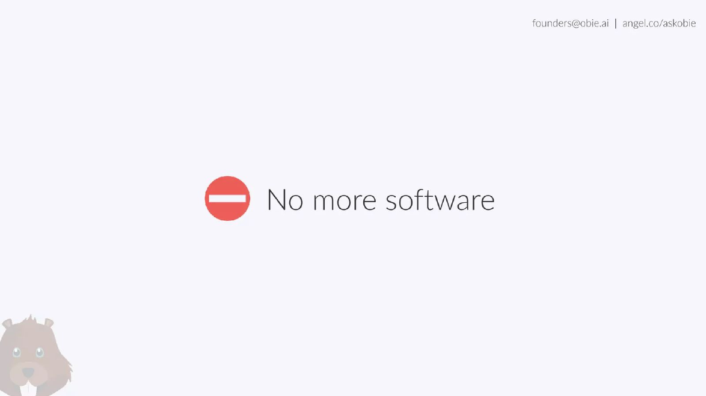
3 · Positioning. “No more software”: don't add another tool; work inside messaging.
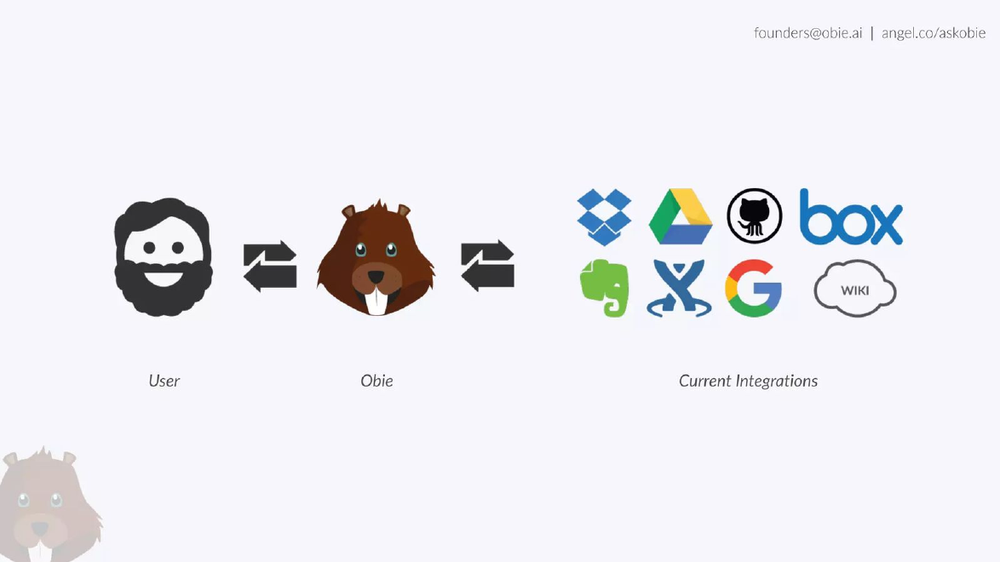
4 · How it works. The user asks Obie; Obie searches the tools the company already uses, Drive, Dropbox, GitHub, Box, Evernote, Confluence, and more.
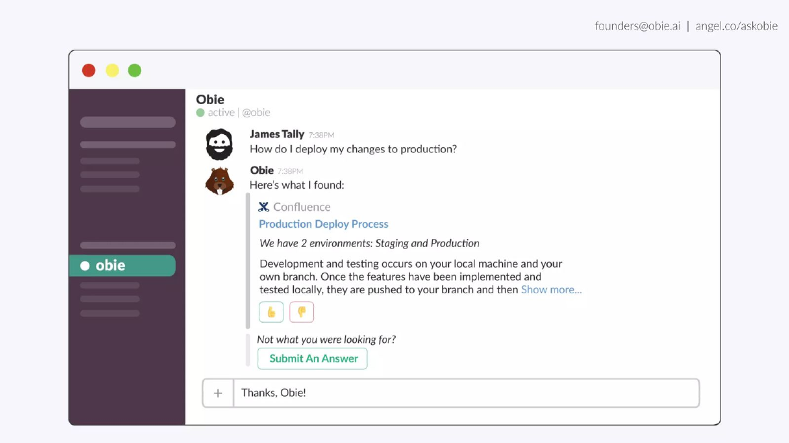
5 · The product. In Slack, Obie answers “How do I deploy my changes to production?” with the Confluence deploy process, feedback and answer submission built into the reply.
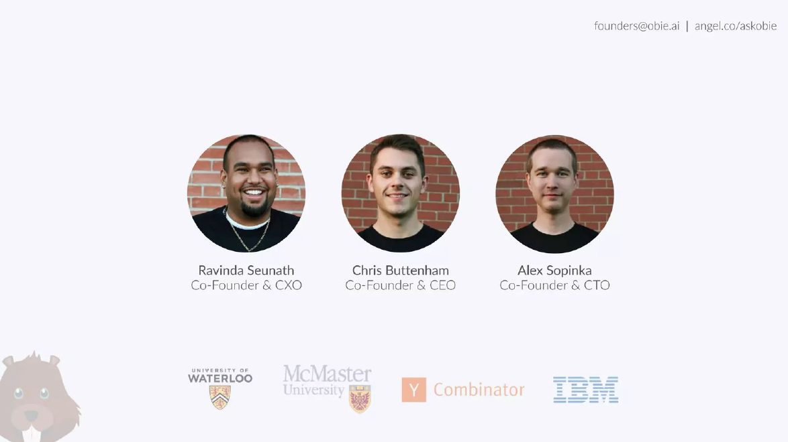
6 · The team. The three co-founders. I joined after beta as Head of Growth, so I'm not on this slide.
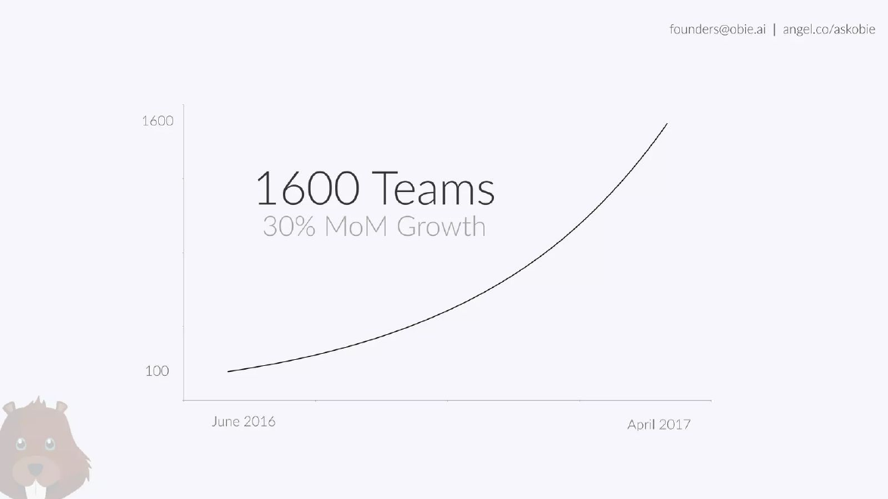
7 · Growth. 100 teams in June 2016 to 1,600 teams by April 2017, 30% month over month.